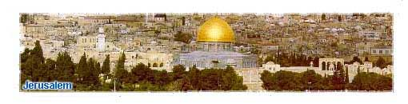
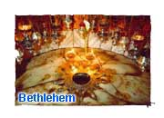
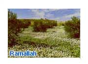
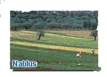
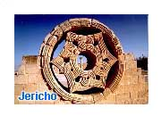
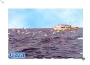
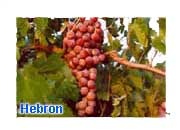

About
|
Experience Palestine Tours
|
About
|
Experience Palestine Tours
|
|  | 
|
Jerusalem Duration
3hrs. Walking tour through the Old City of Jerusalem with an experienced guide. Visit all the religious and historic sites and learn about the situation of the Palestinians in the city. Leaves: 10 am |
| Bethlehem Duration
3-4hrs Guided tour to the sites of the birthplace of Jesus, the city of Bethlehem: Visit the old city market, the church of Nativity and the Milk Grotto. Learn more about the formulation of a new political future in the region. Leaves : Several days a week 10 am or 3pm |
  |
Ramallah and Nablus Duration 1 day Visit the city of Ramallah, including Birzeit University and the traditional village of Jifna. Tour the city of Nablus in the Northern West Bank visiting the Old City (al-Kasbah), Joseph's Tomb, and the Turkish Bath. This tour also includes a visit to one of the refugee camps. Leaves : Tues 10 am |
| Jericho Duration 1/2 day Visit the city of Jericho including St.George Monastry in Wadi Qelt, Tel Jericho, the Mount of Temptation, Hisham's Palace and enjoy the orchard's of the oldest city in the world. Leaves : Mon and Thurs at 9:30 pm |
 |
Refugee Camp Duration 1/2 day This trip takes you to a refugee camp in the West Bank to meet with families and to learn more about the background of the Palestinian refugees. Leaves : Mon and Thurs at 3 pm |
| Gaza Strip Duration 1 day Full day guided tour to Gaza via Eretz check point, including: Gaza city and the Gaza sea shore, Israeli settlements and the settler problem. Visit a refugee camp and the "Organization of the Injured During the Intifada" and the Omari Mosque. Leaves : Wed and Sat at 8 am |
  |
Hebron Duration 1 day Guided tour to the historical and religious sites of Hebron: the Ibrahimi Mosque, Arab Market, glass and pottery factories.The tour also provides comprehensive background information about the situation in the city. Leaves : Sun and Mon 10 am |